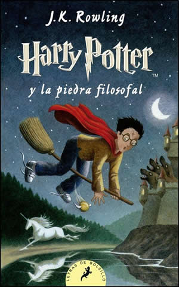

|

|
- Título: Harry Potter y la piedra filosofal
- Autor: J.K. Rowling
- Ilustrador: J.K. Rowling
- Editorial: Salamanca
- Págs: 254
- ISBN: 84-7888-445-9
- Edad recomendada: de 9 a 11 años
-
ARGUMENTO
- Harry Potter se ha quedado huérfano y vive en casa de sus con sus abobinables tíos y su primo Dudley.
- Harry se siente muy triste y solo hasta que ingresa como alumno en el colegio interno Hogwarts de magia y hechiceria.
- A partir de ese momento ,la suerte de Harry da un vuelco espectaccular.
PERSONAJES:
- Harry
- Hermione
- Ron
- Dumbledore
|